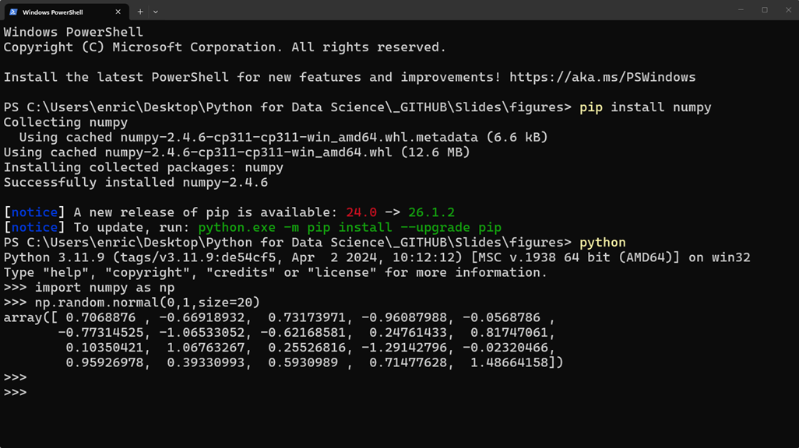
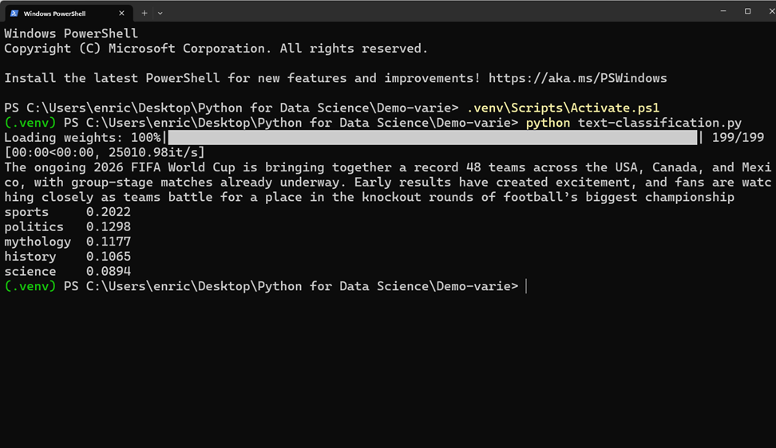
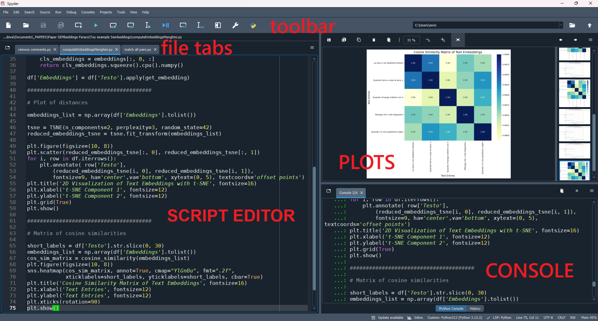
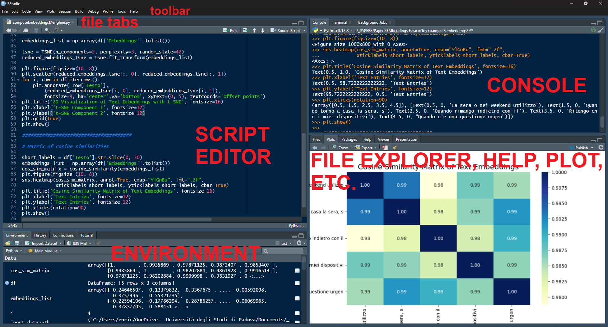

IDEs = ["Spyder", "PyCharm", "RStudio"]
IDEs.append("VS Code")
print(IDEs) 



Let’s run a few commands in your IDE or Colab to see if it works…
Let’s try to install and use a package:
(The whole thing of installing, loading packages, and using functions is much like R, as previously seen)
| Operator | What it does | Example | Result |
|---|---|---|---|
+ |
Addition | 5.4 + 6.1 |
11.5 |
- |
Subtraction | 9 - 4.3 |
4.7 |
* |
Multiplication | 7 * 1.4 |
9.8 |
/ |
Division | 9 / 12 |
0.75 |
// |
Floor division | 13 // 4 |
3 |
% |
Modulus | 13 % 4 |
1 |
** |
Exponentiation | 15 ** 2 |
225 |
(Math constants like pi might require modules, e.g., math.pi)
Unlike R, many math functions require importing a module: import math
| Function | What it does | Example | Result |
|---|---|---|---|
abs(x) |
Absolute value | abs(4.3 - 9.8) |
5.5 |
round(x) |
Round to nearest integer | round(1.7384) |
2 |
round(x, n) |
Round to n digits |
round(1.7384, 2) |
1.74 |
math.sqrt(x) |
Square root | math.sqrt(176.4) |
13.28157 |
math.exp(x) |
Exponential function (\(e^x\)) | math.exp(2.2) |
9.02501 |
math.log(x) |
Natural logarithm, base \(e\) | math.log(9.025013) |
2.2 |
math.log(x, b) |
Logarithm, base \(b\) | math.log(10, 2) |
3.32193 |
| Operator | What it does | Example | Result |
|---|---|---|---|
== |
Equal to | age == 18 |
False |
!= |
Not equal to | age != 18 |
True |
> |
Greater than | age > 18 |
True |
< |
Less than | age < 18 |
False |
>= |
Greater than or equal to | age >= 18 |
True |
<= |
Less than or equal to | age <= 18 |
False |
basic logical operators are and, or, not, just natural language words!
| Operator | What it does | Example | Result |
|---|---|---|---|
and |
and | age > 25 and age < 60 |
False |
or |
or | age < 25 or age > 60 |
True |
not |
not | not age < 18 |
True |
however, when dealing with arrays (more on them later!) you need to use elementwise operators, as basic ones will not work!
| Operator | Description | Example |
|---|---|---|
& |
elementwise “and” |
(ages > 18) & (ages < 60) |
| |
elementwise “or” |
(ages < 18) | (ages > 60) |
~ |
elementwise “not” |
~(ages < 18) |
&”, “|”, and “!” in R
In the previous slides, we already encountered two types of data:
Numeric: e.g., 20, 11.5, 13.28157;
Logical / Boolean (i.e., True, False).
Like in R, numeric data could actually be float (“floating-point”) that is with decimals like 11.5, and int (“integer”) like 20
Unlike R, there is not need to specify “L” for integers
Another very important type of data is string
This is much like R. Python uses strings to represent text, that must be enclosed in quotes (' ' or " "), like this:
And you may even perform operations with strings like:
Lists are ordered, mutable series of elements that can be of mixed types
Tuples are exactly the same, just immutable (cannot update their values!)
Both can be indexed by numeric position using [ ]:
Cannot be indexed by numeric position, but by key:
Python has the built-in type() function to inspect the type of any object:
You may also inquire data type directly with functions is.*:
TrueFalseTrueTrueFalsePython has no built-in missing data type like NA in R. None can be used but is not a type and operations may incur errors. Libraries like numpy and pandas have their own np.nan and pd.NA missing value markers that are more like NA in R.